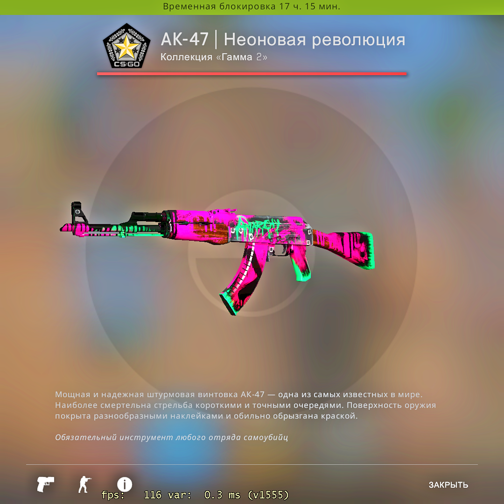

Приветствуем на сайте
Данный сайт будет разделён на 3 части. В первой части будет рассказано о игре CS:GO. Во второй части будет рассказано о игре Minecraft. В третьй части будет рассказано о игре Dota 2.
CS:GO
CS:GO - трёхмерный пользовательский онлайн шутер от первого
лица. В данной игре игроки распределяются на две команды:
Terrorists, Counter-Terrorists. В игре достаточно
многопользовательских режимов c большим выбором
разнообразных карт: обычный и соревновательный
(обезврежевание бомбы, спасение заложников), королевская
битва, военный игры (гонка вооружений, перелётные снайперы,
уничтожение объекта), бой насмерть, напарники.
Плюсами игры являются следующие аспекты:
1. Интересный геймплей. Время проходит быстро и с удовольствием.
2. Вложенные деньги в игру не влияют на победу. Многие игры часто добавляют преимущества для людей, которые тратять на неё деньги, но CS:GO делает игру для всех игроков равной.
3. Игра не особо требовательна. Люди со старами/слабами пк могут играть в неё.
4. К игре легко приспособиться.
5. Большое количество интересных карт для игры.
Минусами игры являются следующие аспекты:
1. Игра сама по себе бесплатная, но чтобы играть в соревновательный режим (на звания) нужен Прайм-статус, который стоит 1000 рублей.
2. Плохая система званий. Непонятно, когда тебя повысят, а когда понизят. Во многих современных играх уже ввели ПТС (при достижении определённого количества ПТС тебя повышают), а в CS:GO нет.
3. Не то чтобы это был минус, но в игре множество модификаций на оружия, которые можно получить лишь за настоящие деньги.
ПИК ОНЛАЙНА
Пик онлайна был 11 февраля 2023 года. Примерно в 16:50 было зафиксировано 1 320 219 пользователей, одновременно играющих в CS:GO.
Лучшее обновление CS:GO.
Обновиться движок для игры на source 2. Обновление рассчитано на лето 2023 года. Обновление будет включать в себя изменения по стрельбе, графике, улучшат гравитацию, улчушат гранаты, оптимизируют игру. Кадры из игры:
СКИНЫ
Хочу вернуться на тему скинов. Они платные, но приносят дополнительное удовольствие от игры. Примеры скинов:

Вторая часть про Minecraft
Minecraft